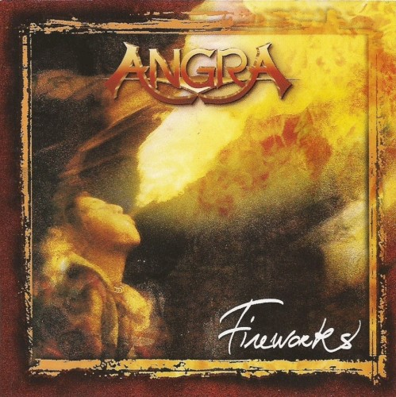

Fireworks
Elenco
- Andre Matos — vocals, keyboards
- Kiko Loureiro — guitars
- Rafael Bittencourt — guitars
- Luis Mariutti — bass
- Ricardo Confessori — drums
Sobre o álbum
Fireworks é o terceiro álbum de estúdio da Angra, lançado em julho de 1998 e gravado
em Londres com o produtor Chris Tsangarides (Judas Priest, Helloween). O disco marca
o retorno a um som mais direto e melódico após a experimentação de Holy Land, combinando
power metal, orquestrações gravadas na Abbey Road e letras introspectivas de Andre Matos.
Foi o último álbum da formação clássica com Matos nos vocais e Mariutti no baixo antes
da saída do vocalista e da reformulação que culminou em Rebirth (2001).
Gravação
Gravado entre abril e junho de 1998 nos estúdios Metropolis e Rainmaker (Londres),
com gravações adicionais no Marcus Studios e orquestra registrada na Abbey Road Studios
em maio de 1998. Mixagem por Chris Tsangarides no Rainmaker; masterização por Ian Cooper.
O produtor também co-escreveu letras de "Petrified Eyes" e "Mystery Machine". A capa,
concebida por Ricardo Confessori, foi executada por Isabel de Amorim no estúdio Arsenic
(Boulogne, França). Kiko Loureiro relatou que Matos quase deixou a banda após Holy Land
e que a Angra chegou a ensaiar com Edu Falaschi antes de uma reconciliação mediada pela
gravadora.
Conceito
O título e a capa evocam celebração efêmera — fogos de artifício como metáfora de instantes
luminosos em meio à escuridão. As letras exploram busca espiritual, nostalgia, crítica social
(gladiadores, espetáculo, guerras), sonhos extremos e a passagem do tempo — um disco mais
pessoal e melancólico que seus antecessores, sem abandonar a grandiosidade orquestral e o
virtuosismo característicos da banda.
Recepção
Fireworks alcançou a 15ª posição no Oricon japonês e a 41ª na França. Críticas foram
mistas a positivas (Metal Storm 7,4/10): elogiou-se a produção e as faixas orquestradas,
mas alguns críticos consideraram o álbum menos coeso que Angels Cry e Holy Land. Com o
tempo, faixas como "Lisbon", "Metal Icarus" e a title track consolidaram-se como clássicos
da era Matos.
Faixas
- 1. Wings of Reality 4/10 5:54
- 2. Petrified Eyes 2/10 6:05
- 3. Lisbon 8/10 5:13
- 4. Metal Icarus 4/10 6:23
- 5. Paradise 1/10 7:38
- 6. Mystery Machine 1/10 4:11
- 7. Fireworks 3/10 6:20
- 8. Extreme Dream 1/10 4:16
- 9. Gentle Change 4/10 5:35
- 10. Speed 1/10 5:57
Referências
- Fireworks (album) — Wikipedia (article)
- Fireworks — MusicBrainz (database)
- Angra: Andre Matos quase saiu antes de Fireworks — Whiplash.Net (article)